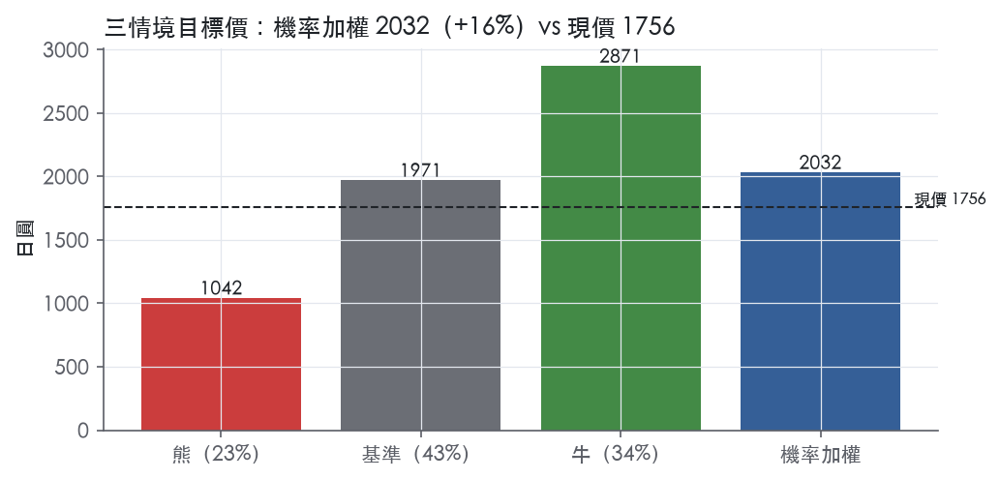
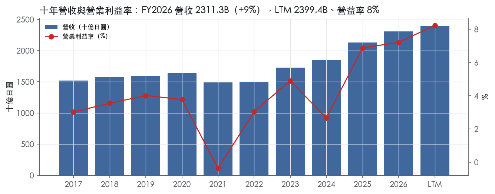
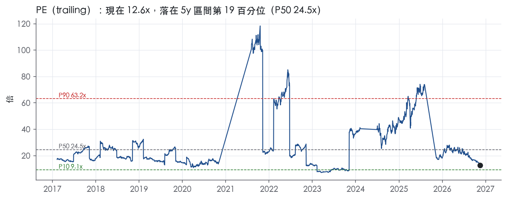
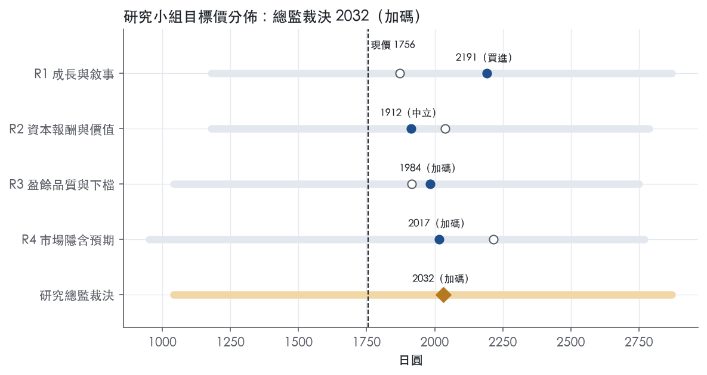
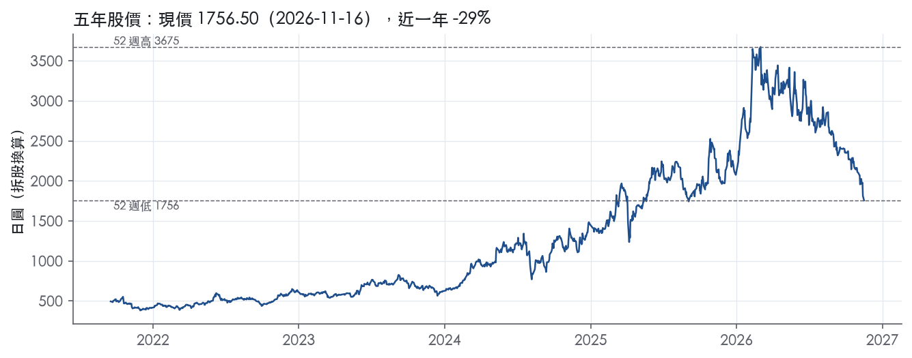

評等總表 › 未分類 › 7012.T
盈餘扣一次性後仍被低估，看多｜評等 加碼｜目標價 2032
| 報告日 | 評等 | 目標價 | 當時股價 | 超額報酬 |
|---|---|---|---|---|
| 2026-11-16 | 加碼 | 2,032 | 1,756 | +10.1% |
| 評等 | 加碼 |
| 12 個月目標價 | 2032 日圓 |
| 現價 | 1756.50 日圓（2026-11-16） |
| 預期報酬 | 股價 +15.7%＋股息 2.2%＝總報酬 +17.9%；日股門檻 7.8%，超額 +10.1% |
| 估值方法 | P/E 12.5x，套在第 5–8 季的EPS（也就是一年後的未來四季） |
| 三情境 | 熊 1042／基準 1971／牛 2871 |
| 研究流程 | 四位研究員兩輪辯論＋研究總監裁決 |
| 資料來源 | EDINET、TDnet、J-Quants、Yahoo、FRED（全免費） |
盈餘扣一次性後仍被低估，看多（研究總監裁決，四位研究員兩輪辯論後）
評等 加碼｜12 個月目標價 2032 日圓（總監三情境機率加權 2063 與研究員中位數 2000 各半）｜現價 1756.50（2026-11-16）
預期報酬：股價 +15.7%＋股息 2.2%＝總報酬 +17.9%。日股門檻 7.8%，超額 +10.1%。
估值方法：P/E 12.5x，套在第 5–8 季的EPS（也就是一年後的未來四季）。三情境：熊 1042（23%）／基準 1971（43%）／牛 2871（34%）。
什麼會讓研究總監改變看法：2027-02-10 第三季短信下修全年計畫、認列個別專案損失或棚卸資産再創新高，基準倍數降到 10x、轉中性；FY2027 全年營業 CF 回正且存貨下降，倍數上調至帶 P50。
| 過去四季（實際，FY2027Q2） | 未來四季 | 第 5–8 季 | 第 9–12 季 | |
|---|---|---|---|---|
| 營收（B） | 2,399.4B | 2,555.4B | 2,708.7B | 2,871.2B |
| 營收成長 | 7.1% | 6.5% | 6.0% | 6.0% |
| 營業利益率 | 8.2% | 7.7% | 8.0% | 8.2% |
| EPS（日圓） | 139.14 | 144.03 | 157.66 | 170.32 |
| EPS 成長 | 20.8% | 3.5% | 9.5% | 8.0% |
| 每股股息（日圓） | — | 0.00 | 0.00 | 0.00 |
| P/E（現價） | 12.6x | 12.2x | 11.1x | 10.3x |
| 股息殖利率（現價） | 2.2% | — | — | — |
過去四季為申報數字；預測為研究總監的假設、程式計算。倍數與殖利率都用現價計算，用來看現價對應各期獲利的高低。
| 情境 | 機率（歷史） | 故事 | 未來四季營收成長 | 第 5–8 季營益率 | 倍數 | 目標價 | 股價漲跌 |
|---|---|---|---|---|---|---|---|
| 熊 | 23%（22%） | 風險表第 1 條營運資金卡住（存貨不去化、營業 CF 不回正）為主、第 3 條專案損失（R211、達卡 6 號線、潛艦修繕）為輔、第 2 條關稅壓北美動力運動薄利；美國下行路徑去槓桿、再度股權融資 | 3.0% | 6.0% | 11.0x | 1042 | -40.7% |
| 基準 | 43%（46%） | 本行基準 GDP 1.8、日圓 153；下半年按季節性兌現公司計畫 118.00B，Q5–Q8 利潤率達 8%，倍數由 10x 附近回到 12.5x | 6.5% | 8.0% | 12.5x | 1971 | 12.2% |
| 牛 | 34%（33%） | 美國上行 GDP 2.8＋日本上行日圓 145；國防與油壓放量超出計畫、Q4 營運資金回收，可轉債轉換稀釋，倍數回到帶 P50 | 8.5% | 9.0% | 15.5x | 2871 | 63.5% |
目標價由程式依研究總監的驅動與倍數計算；機率由研究總監給定。括號內是歷史頻率：把這檔股票過去十年 12 個月報酬的波動形狀，置中在基準情境，結果落在各情境附近的比例。

四位研究員用不同方法各自估值，回應研究總監的質疑後交出第二輪，最後由總監逐點裁決。各研究員的主張見第七章，裁決理由見第八章，完整論證見《研究底稿》。
| 立場（一輪→二輪） | 加權目標價（一輪→二輪） | 評等（一輪→二輪） | 第二輪倍數 | 熊～牛目標價 | |
|---|---|---|---|---|---|
| R1 成長與敘事 | 中性→看多 | 1872→2191 | 中立→買進 | 13.0x | 1179～2871 |
| R2 資本報酬與價值 | 中性→中性 | 2038→1912 | 加碼→中立 | 12.0x | 1180～2788 |
| R3 盈餘品質與下檔 | 中性→中性 | 1917→1984 | 中立→加碼 | 13.0x | 1042～2750 |
| R4 市場隱含預期 | 看多→看多 | 2216→2017 | 買進→加碼 | 12.5x | 952～2771 |
| 研究總監裁決 | 看多 | 2032 | 加碼 | 12.5x | 1042～2871 |
目標價由程式依各自的驅動與倍數計算；評等＝機率加權總報酬 − 日股門檻。
川崎重工業是一家橫跨航空宇宙、鐵道車輛、能源與船舶、精密機械與機器人、動力運動五大製造業的綜合重工集團，客戶涵蓋國防部門、商用航空公司、全球鐵路運營商、能源與造船業者、工廠自動化業者，以及二輪車與水上摩托車的終端消費者。集團由母公司加136家子公司、31家關聯公司（含共同支配企業）構成，依六個事業範疇（航空宇宙系統、車輛、能源解決方案＆船舶、精密機械・機器人、動力運動＆引擎、其他事業）對應六個報告分部，彼此一致。集團使命為「以最先端技術創造新價值，開拓顧客與社會可能性的Global Kawasaki」，並以「質主量従」「風險管理」為方針，追求超越資本成本的穩定利益創出。公司在FY2025與FY2026連續刷新接單、營收、利益的歷史新高，且首次讓全部分部轉為盈利體質。公司2024年查出潛水艦修繕與舶用引擎事業的不正事案，目前仍在推進特別調查委員會提出的再發防止策，這是觀察治理風險時必須納入的背景。
六個分部規模與獲利結構差異很大，動力運動＆引擎與航空宇宙是營收主力，能源＆船舶與精密機械・機器人是獲利率最高的分部。各分部主要產品：航空宇宙系統＝飛機、航空發動機、宇宙相關設備的製造銷售；車輛＝鐵道車輛、除雪機械的製造銷售；能源解決方案＆船舶＝能源相關機器與系統、氫能相關設備、船用推進機器與系統、工廠相關機器與系統、船舶、破碎機等的製造銷售；精密機械・機器人＝油壓機器、工業用機器人等的製造銷售；動力運動＆引擎＝二輪車、越野四輪車（SxS、ATV）、個人水上摩托車「JET SKI」、通用汽油引擎等的製造銷售；其他事業＝商業仲介、福利設施管理等。以FY2027H1（2026年4-9月累計，決算短信）外部銷售收入觀察，動力運動＆引擎318.9B最大、約占集團總營收1,084.4B的29.4%，航空宇宙系統282.6B次之、占26.1%，能源＆船舶185.2B占17.1%，精密機械・機器人146.9B占13.5%，車輛109.9B占10.1%，其他事業40.8B占3.8%【判，計算自抄：決算短信 2026-11-10】。但獲利結構完全反轉：能源＆船舶半年事業利益30.6B、利益率16.5%最高，精密機械・機器人事業利益20.9B、利益率14.2%次之，航空宇宙系統事業利益10.0B但利益率僅3.5%，動力運動＆引擎事業利益15.5B、利益率4.9%，車輛事業利益3.4B、利益率3.1%最低【判，計算自抄：決算短信 2026-11-10】。公司在FY2025已有分部達到2030年度目標事業利益率10%，並將2027年度全社目標設為8%。資本支出方面，FY2025全年合計143.3B（含無形資產及使用權資產），其中動力運動＆引擎42.3B最大（增產對應設備），其他事業（主要是氫能相關）35.0B次之，航空宇宙系統33.1B（生產合理化設備）居第三，能源＆船舶16.1B、精密機械・機器人10.8B、車輛5.8B。研發費用FY2025合計56.8B，動力運動＆引擎19.2B最高，本社部門（含氫能、DX、新事業）15.6B居次，能源＆船舶6.7B、精密機械・機器人6.4B、航空宇宙系統中的航空發動機事業7.3B、車輛僅1.4B。公司正押注三個注力領域：「安全安心遠端社會」（醫療、照護、機器人）、「近未來移動性」（新運輸系統）、「能源・環境解決方案」（液化氫供應鏈），這些跨分部主題是未來新事業的孵化方向。
客戶高度集中於國防與專業B2B領域，消費端集中在動力運動。防衛航空機與直升機的量產合約、民用航空發動機整備、鐵道車輛海外交付（孟加拉達卡6號線、美國R211）是航空宇宙與車輛分部的主要收入來源。動力運動＆引擎事業在北美設有兩座工廠（美國、墨西哥），並透過Kawasaki Motors Corp., U.S.A.、Kawasaki Motors Europe N.V.、PT. Kawasaki Motor Indonesia等子公司分區銷售二輪車、四輪車與水上摩托車；2025年4月與伊藤忠商事在美國合資成立用戶金融公司Kawasaki Motors Retail Finance, LLC，強化通路端的消費金融能力，並共同開拓亞洲、中南美、中近東、非洲等新興市場。關係企業中，Kawasaki Motors Corp., U.S.A.單一子公司的銷售收入占連結銷售收入超過10%，為揭露的最大單一地區性子公司，顯示北美動力運動市場對集團營收的重要性。精密機械・機器人分部則透過日本、美國、歐洲、中國、印度、泰國等地子公司銷售油壓機器與工業機器人，並以醫療機器人「hinotori™」進軍歐洲、與FORRO、mapxus Driven by Kawasaki™協作差異化。政策保有股方面，公司持續縮減交叉持股，FY2025末上市特定投資股票帳列金額合計3,471M，非上市股票6,327M，呼應東證對資本效率與股價重估的要求。
最近四季營收與利潤呈現前低後高、本期轉強的格局，動力運動與能源＆船舶是主要驅動力。FY2026Q1（2025年6月）營收488.44B，年減21.2%，淨利4.24B（ltm資料包）；FY2026Q2（2025年9月）營收507.81B，淨利17.84B。公司在2026年11月10日發布的FY2027Q2（2026年9月）中間決算顯示，累計半年銷售收入1,084,419M（折合1,084.4B），年增8.9%，累計半年銷售毛利215,145M（215.1B），累計半年事業利益73,866M（73.9B），遠高於前年同期35,713M（35.7B）。累計半年稅前中間利益56,784M（56.8B），前年同期35,374M（35.4B）；歸屬母公司中間利益30,922M（30.9B），前年同期22,089M（22.1B）；基本每股中間利益36.18円，希薄化後36.16円，前年同期26.43円。單季觀察，FY2027Q1營收543.58B、淨利15.66B，FY2027Q2營收540.84B、淨利15.26B（資料包ltm資料），兩季合計與決算短信半年累計數字一致。現金流方面，FY2027H1營業活動現金流為負88,076M（-88.1B），較前年同期負26,066M（-26.1B）進一步惡化，主因存貨增加106,732M與契約資產增加45,202M的營運資金消耗；投資活動現金流負49,426M（-49.4B），財務活動現金流則因發行新股93,427M與發行公司債101,000M轉為正109,599M（109.6B）。期末現金及約當現金87,648M（87.6B），較期初115,414M（115.4B）減少。公司在2026年11月10日的短信摘要頁公布本年度（FY2027）全年計畫：稅前利益161.00B、歸屬母公司淨利118.00B、每股盈餘133.69円。以半年淨利30.9B對照全年計畫118.0B，下半年需要貢獻約87B淨利，顯示公司預期下半年獲利加速，這與日股公司期初計畫普遍保守、實際常上修的慣性一致，但仍需觀察中東地緣政治對原油供應與部分事業操作的影響是否兌現於下半年。
公司自己定義的成長引擎是「グループビジョン2030」下的三個注力領域：「安全安心遠端社會」、「近未來移動性」、「能源・環境解決方案」，並稱這是回應高齡化、勞動力不足與國家安全保障需求的解法。公司表示2025年度接單、營收、利益均創歷史新高，且全分部轉虧為盈，部分分部已達成2030年度事業利益率10%以上的目標，全社達成2027年度8%目標的「蓋然性」正在提高。水素（氫能）事業被視為最重要的新事業，公司已啟動全球首座商用規模液化氫基地的建設，並推進液化氫運輸船建造專案，作為氫能社會商用化的驗證。公司同時承認治理風險：2024年查出的潛水艦修繕與舶用引擎不正事案，正以「揪出所有膿包」的決心推動檢查流程自動化、經費稽核、組織風土改革三大支柱的再發防止策，2026年4月並新設「組織風土改革・コンプライアンス総括部」與社長直屬「品質保証総括部」。各分部的具體課題也有公司自己的表述，例如車輛事業強調達卡6號線與美國R211案的交付排程遵守、精密機械事業強調油壓電動化與機器人高附加價值集中投資、動力運動事業強調北美市場庫存與收益性的平衡。整體看，川崎重工業正從傳統重工轉向「國防＋氫能＋機器人」三引擎敘事，獲利結構已明顯從航空宇宙與車輛的低毛利業務，轉向能源＆船舶與精密機械・機器人的高毛利業務貢獻。半年營業現金流轉負、存貨與契約資產大幅攀升，顯示營收成長背後有營運資金壓力，這點與公司強調的「現金流創出力強化及降低有息負債」目標存在落差，值得在後續財報追蹤存貨去化節奏。股票分割後流通股數增加、加上2026年9月間新股與可轉債發行，稀釋效應與治理整改進度是本案最大的非財務變數。

川崎重工在集團層級沒有護城河，我們沒有把握未來 5 年 ROIC 能穩定高於資本成本。趨勢判為變寬，理由是防衛需求、動力運動品牌，以及油壓與維修服務化，讓最近兩年的 ROIC 首度站上資本成本代理值。不過這段改善只有兩年，不足以把評級升到窄。防衛航空、油壓機器、Kawasaki 品牌的動力運動各有局部優勢，但被集團的資本密集度與新事業投資稀釋，整體報酬撐不起護城河。
有證據的來源只有三類：無形資產、效率規模、轉換成本。成本優勢與網路效應在原文中找不到證據，不列。
無形資產（品牌）：公司在動力運動事業的策略是推出「根植於 Kawasaki 品牌、具吸引力的機型」。該事業的研發以強化 Kawasaki 品牌力為目標，研發費為 19.2B。這是各事業中最高的研發投入，顯示品牌維持是公司的主要投資方向。品牌的價值多半留在製造端，銷售端分到的很少：北美銷售子公司 Kawasaki Motors Corp., U.S.A. 的銷售收入為 388,899M，稅前利益只有 7,758M。我們據此判斷品牌帶來的定價力有限，強度不到寬護城河品牌的水準。
效率規模（國防）：公司正推進防衛航空機與直升機的既有開發案及量產合約，並在本社設立防衛事業管理本部，統一防衛資訊管理與對外窗口。公司自行開發的小型輕量引擎已實際用於防衛事業。日本國防裝備的需求只容得下少數國內主承包商，新進者缺乏投入開發的經濟誘因，這是集團最接近結構性優勢的一塊。
轉換成本（油壓與維修服務）：油壓事業以高控制技術與開發力，切入建機電動化與自動化的新產品，同時擴建海外銷售網路來強化服務事業。航空引擎事業正投入民間航空引擎整備事業所需的研發。車輛事業則在擴大零件、服務與保守領域，包括北美軌道遠端監視裝置與國內車輛狀態監視事業。油壓泵一旦設計進挖土機平台，主機廠要換供應商就得重新驗證；維修與監視服務則讓客戶在整個設備壽命內持續依賴原廠，兩者都構成轉換成本。
看不到：量化底稿不支持「寬」或「窄」，只支持「最近兩年改善」。
ROIC 十年平均 6.2%，低於資本成本代理值 10.1%，平均差 -3.9%。ROIC 有資料的 9 年中，只有 2 年高於資本成本。ROIC 標準差 3.8%，最低 -0.6%（年度表 FY2021），報酬不具備護城河應有的韌性。
營業利益率十年平均 3.9%，最新的 7.2% 剛好是十年最高。毛利率標準差 2.1% 看似穩定，但平均只有 17.1%。我們認為毛利率穩定反映的是接單生產的成本加成結構，而不是定價力。
FCF 利潤率十年平均 -0.2%，最低 -5.3%，LTM FCF 為 -43.10B。盈餘長期沒有轉成現金，這和有護城河的公司特徵相反。
數字與正面論述之間有衝突：ROIC 在 FY2025 為 12.1%、FY2026 為 11.8%，兩年都高於代理值。代理值是以美國 10 年債 5.1為基礎，而日本 10 年債只有 2.841，以日圓計的資本成本應低於代理值，長期缺口會因此縮小。但即使放寬門檻，FY2021 的負值與 3.8% 的波動仍說明報酬撐不過景氣低谷，所以評級維持無、不上修到窄。
公司自己的目標是稅後 ROIC 達到 WACC 加 3% 以上。公司的 ROIC 定義是「歸屬母公司淨利加稅後支付利息」除以「淨有息負債與自有資本的期首期末平均」。這個口徑和量化底稿不同，估值時不能直接拿兩者比較。
最大的侵蝕來源是治理，其次是新事業的資本消耗與外部景氣。
治理：2024 年公司查出潛水艦修繕事業與舶用引擎事業的不正事案。修繕部門可以對交易對象架空發包，是不正的原因之一。公司承認長年違規的背景是因循前例、息事寧人的組織風土。國防的效率規模建立在採購方的信任上，弊案正好打在集團最有價值的那塊優勢。
新事業：以氫能為主的其他事業，設備投資為 35.0B。醫療機器人關聯公司メディカロイド目前債務超過，金額 13,593M。氫能與醫療機器人在商業化之前，會持續壓低集團 ROIC。
外部環境：公司點名的外部風險包括中東情勢引發的油價高漲與供給限制、中國經濟停滯、美中關係緊張與美國關稅。原油供給限制已開始影響部分事業的營運。動力運動高度依賴北美市場，關稅與消費降溫會直接侵蝕品牌事業的利潤。
目標倍數應相對同業折價，不應給溢價。理由有三：ROIC 在 9 年中只有 2 年高於資本成本、FCF 利潤率十年平均 -0.2%，以及治理事件尚未落幕；改善只持續兩年，市場不該為還沒證明的持續性付錢。如果之後 ROIC 連續數年留在資本成本之上，且 FCF 轉正，折價可以收斂到與同業持平，但仍不足以支持溢價。
| 指標 | 最新 | 十年平均 | 標準差 | 最低 | 最高 |
|---|---|---|---|---|---|
| ROIC | 11.8% | 6.2% | 3.8% | -0.6% | 12.1% |
| 毛利率 | 19.7% | 17.1% | 2.1% | 12.8% | 20.3% |
| 營業利益率 | 7.2% | 3.9% | 2.1% | -0.4% | 7.2% |
| FCF 利潤率 | 1.0% | -0.2% | 3.1% | -5.3% | 5.9% |
| ROE | 13.7% | 6.2% | 5.2% | -4.2% | 13.7% |
程式計算。資本成本代理值（10 年債＋5%）：10.1%；ROIC 平均減資本成本：-3.9%；ROIC 有資料的 9 年中，高於資本成本 2 年。
LTM 營業現金流／淨利僅 0.67x、自由現金流／淨利為 -0.37x，兩項都亮紅燈，而十年平均分別是 2.40x 與 0.14x，顯示近期現金轉換明顯弱於歷史常態。半年報 FY2027 上半年（2026年4月—9月）營業活動現金流為 -88.08B，遠低於去年同期的 -26.07B，而中間利益（歸屬母公司）為 30.92B，現金流與利潤方向完全背離。拆解現金流量表可以看到，稅前營運現金流小計本身就是 -60.41B，主因是存貨增加吃掉 106.73B 現金、契約資產增加吃掉 45.20B 現金，部分抵銷掉營業債權減少帶來的 111.73B 現金流入。這是典型的量產擴產期＋訂單結構轉變造成的營運資本堆積，不是收入認列造假。年度層面看，FY2026 全年營業活動現金流得到的資金較前期減 8.8B 至 140.0B（即1,400億円），與歸屬母公司淨利 108.1B（即1,081億円）相比，CFO／淨利仍大於 1，年度數字本身不差，問題集中在最新一個半年度的存貨與契約資產堆積。
決算短信本身沒有單獨列示「非 GAAP 調整表」，公司對外溝通的核心指標是日本企業慣用的「事業利益」（IFRS下的營業利益概念，含持分法投資損益、其他收益／費用），而非美式非 GAAP EPS 調整。FY2026 事業利益為 145.1B（1,451億円），較前期僅增 1.9B（19億円），但歸屬母公司淨利增加 20.1B（201億円），增幅主要來自匯兌損益改善而非本業，這代表淨利成長裡有一部分是匯率貢獻、非經常性。此外半年報資本變動表顯示當期新股發行與可轉債發行帶入資本公積合計約 64.1B（46,713M資本金＋17,997M可轉債＋其他），這會稀釋股東權益但不影響損益表盈餘品質，屬於融資面而非盈餘調整。整體而言，沒有看到大規模一次性重組費用或減損被從 GAAP 盈餘中剔除以美化非 GAAP 數字，調整幅度有限、透明度尚可。
槓桿維持在可控區間，淨負債／EBITDA 的 LTM 值 1.20x 遠優於十年平均 3.20x、燈號為綠。半年報顯示有利子負債結構從短債轉長債：短期借入金淨減 6.73B（決算短信現金流量表），同期發行社債取得 101.0B、長期借款償還 8.0B，顯示公司主動把債務期限拉長，而非被迫舉新債度日。資本面，親會社所有者歸屬持分從 878.12B 增至 1,004.86B（半年期間），主要來自新股發行 92.87B 與可轉債發行 17.997B，加上配息支出 16.08B（股東面），顯示公司在這個半年同時增資擴張與配息，資本結構轉趨穩健但稀釋了既有股東權益比例。利息保障倍數 LTM 6.45x 為黃燈（門檻 8.00x 綠、3.00x 紅），比十年平均 9.96x 弱，但仍遠高於紅線，和半年報金融費用從 9.09B（去年同期）跳升至 18.46B（量化底稿年度表＋決算短信）方向一致，反映新發債券與利率環境走高的成本，尚非無法付息的警訊。
估值應以 GAAP／事業利益為主要錨點，不需要對 FY2026 全年盈餘打太重的折扣，因為年度 CFO／淨利仍大於 1、槓桿綠燈。但半年報現金轉換明顯轉弱且公司全年計畫（業績予想）稅前利益 161.00B、歸屬母公司淨利 118.00B、EPS 133.69隱含下半年需要大幅去化存貨與契約資產才能兌現，估值研究員應對下半年達成率打一點折扣、而非對已認列的 GAAP 盈餘本身打折。槓桿目前不構成倍數壓制，但若下半年現金流持續未能回正，淨負債／EBITDA 可能從目前 1.20x 的綠燈區間走高，屆時需重新檢視目標倍數。
| 項目 | LTM | 近三年 | 十年 | 燈號 | 規則 |
|---|---|---|---|---|---|
| 營業現金流／淨利 | 0.67x | 1.41x | 2.40x | 紅 | ≥1.00x 綠、<0.80x 紅 |
| 自由現金流／淨利 | -0.37x | -0.65x | 0.14x | 紅 | ≥0.90x 綠、<0.60x 紅 |
| 應計比率（(淨利−CFO)／平均總資產） | 1.2% | -1.1% | -1.8% | 黃 | ≤0.0% 綠、>5.0% 紅 |
| SBC／營收 | — | — | — | — | ≤3.0% 綠、>8.0% 紅 |
| 淨負債／EBITDA | 1.20x | 1.82x | 3.20x | 綠 | ≤1.50x 綠、>3.00x 紅 |
| 利息保障倍數（營業利益／利息） | 6.45x | 4.82x | 9.96x | 黃 | ≥8.00x 綠、<3.00x 紅 |
| 稀釋股數年變動 | 2.3% | 5.2% | 2.5% | 黃 | ≤0.0% 綠、>3.0% 紅 |
| （股利＋回購）／淨利 | 24.5% | 32.0% | 34.0% | 黃 | ≥50.0% 綠、<0.0% 紅 |
程式計算；燈號以 LTM（無則近三年平均）判定。
| 風險 | 觸發指標（看什麼數字、在哪裡看） | 對 EPS 的影響方向與粗略幅度 | 未來 12 個月發生機率（高／中／低） | 出處 |
|---|---|---|---|---|
| 營運資金膨脹、現金流持續為負 | 決算短信「營業活動によるキャッシュ・フロー」、棚卸資産與契約資産增減額 | 方向：負，EPS 不直接受衝擊但現金流與淨負債惡化，壓抑倍數；FY2027H1 營業現金流 -88,076M，前年同期 -26,066M（惡化） | 高 | |
| 地政學與關稅、對中出口管制衝擊供應鏈 | 中國對日輸出規制公告、美國關稅政策異動、原材料與能源價格 | 方向：負，大／中（公司明示為「特に重要なリスク」第一項） | 高 | |
| 大型專案契約與履行風險（潛艦修繕、R211、達卡6號線等） | 個別大型專案損失計提公告、經營會議／取締役會報告的徵兆事項 | 方向：負，過去曾有多額損失計上案例；幅度不可量化 | 中 | |
| 合規不正事案再發與治理整改進度 | コンプライアンス特別推進委員會進度報告、是否出現新不正事案公告 | 方向：負，涉及損害賠償、信用失墜、不買運動 | 中 | |
| 匯率波動（中東情勢推升波動） | usdjpy 即期匯率、公司業績予想假設匯率 | 方向：雙向，動力運動＆引擎事業對日圓曝險大；幅度不可量化 | 中 |
營運資金膨脹、現金流持續為負排第一，因為它是已經發生、且在最新一期財報中加速惡化的事實，不是假設性風險。FY2027H1 營業活動現金流為 -88,076M，較前年同期 -26,066M 進一步惡化，主因棚卸資産增加 106,732M、契約資産增加 45,202M。公司靠發行新股 92,865M 與可轉換公司債 17,997M 補足資金，財務活動現金流轉正至 109,599M（決算短信記載為「財務活動によるキャッシュ・フロー」正值），但這代表營收成長的背後是以股權稀釋與舉債換取營運資金，而非自身現金流造血。若存貨與契約資產持續攀升而未能轉化為收現，淨負債（365.74B）將進一步上升，壓抑 trailing 倍數並增加資金調達成本風險。觀測指標是每季決算短信的現金流量表與資產負債表上的存貨、契約資產科目。
地政學與關稅、對中出口管制是公司自己列為「特に重要なリスク」的第一項，涵蓋經濟安全保障、中東情勢、中國對日輸出規制、美國關稅措施。公司在美國、中國、歐洲均有生產銷售據點，調達與物流可能因此停滯或成本上升。這條風險機率高，是因為公司原文已明確點名「既に顕在化している重大なリスク」，代表不是潛在假設而是現在進行中的狀況。觀測指標是中國商務部對日輸出管制清單更新、美國關稅稅則調整公告，以及公司在財報中揭露的原材料成本上升幅度。
大型專案契約與履行風險涉及潛艦修繕、美國R211鐵道車輛交付、達卡6號線交付排程等具體項目。公司原文明確說「過去に多額の損失を計上した案件」多因契約條件或解釋相違，顯示這類風險有前例可循，不是純理論風險。車輛分部FY2027H1事業利益率僅3.1%，為六分部最低【判，計算自抄：決算短信 2026-11-10】，若任一大型交付專案出現延遲罰款或成本超支，將直接壓縮該分部本已薄弱的利潤緩衝。觀測指標是公司在決算說明會或臨時報告中揭露的個別專案損失計提金額。
合規不正事案再發與治理整改進度排第四，因為這是2024年已實際發生、且公司仍在整改中的既定事實，而非單純假設性風險。公司在FY2026新設「組織風土改革・コンプライアンス総括部」與社長直屬「品質保証総括部」，顯示整改尚未完成，仍有再發可能。若再查出新不正事案，影響不僅是賠償金額，更可能衝擊國防與航空客戶對公司的信任，進而影響合約續約。觀測指標是特別調查委員會或コンプライアンス特別推進委員會的後續報告、是否有新查出的不正事案公告。
匯率波動列最後一條，因公司自己承認業績見通已「含一定量の為替変動リスク」，中東情勢可能同時推升匯率短期波動與原油價格的長期影響。動力運動＆引擎分部在北美有兩座工廠且透過美、歐、印尼子公司銷售，對日圓曝險顯著（業務概況章）。公司有做外匯避險與價格轉嫁，但幅度不可量化，僅能定性判斷方向雙向。觀測指標是 usdjpy 即期匯率對比公司業績予想所用假設匯率的偏離程度。
股權與可轉債稀釋對每股盈餘的侵蝕速度可能快於淨利成長：FY2027H1 因新股發行92,865M與可轉換公司債17,997M，資本金與資本剩余金大幅增加，若未來持續以股權融資彌補營運資金缺口，稀釋後EPS成長率可能落後淨利成長率，這點公司在風險因子章未單獨列出。
全社經常利益目標（FY2027事業利益率8%）建立在能源＆船舶與精密機械・機器人兩個高毛利分部持續擴張的假設上，若這兩個分部的接單動能或氫能商用化進度不如預期放緩，全社獲利結構將被迫倒退回仰賴航空宇宙與車輛的低毛利業務，但公司風險因子章未將「分部獲利結構過度依賴少數高毛利分部」單獨列為一項風險。
現價 1756.50 對應 trailing（過去四季）P/E 12.6x、EV/EBITDA 6.3x、EV/EBITA —、EV/Sales 0.8x、FCF 殖利率 -2.8%。主要估值倍數 P/E 現在 12.6x，落在5 年區間第 19 百分位（P10／P50／P90 = 9.1x／24.5x／63.2x）。

把程式的機械基準預測放到現價下，市場付的前瞻倍數是：P/E（未來四季） 10.0x、P/E（第 5–8 季） 9.6x。反推 DCF 顯示市價隱含未來五年營收年成長 -2.4%（WACC 9.0%、終值成長 3.0%、FCF 利潤率 6.3%，SBC 不加回）。
| 倍數 | 現在 | 5 年 P10 | 5 年 P50 | 5 年 P90 | 現在分位 | 全期 P50 |
|---|---|---|---|---|---|---|
| P/E | 12.6x | 9.1x | 24.5x | 63.2x | 19.3% | 21.1x |
| EV/EBITDA | 6.1x | — | — | — | — | 8.7x |
| EV/EBITA | 12.4x | — | — | — | — | 19.0x |
| EV/EBIT | 9.5x | — | — | — | — | 19.8x |
| EV/Sales | 0.8x | — | — | — | — | 0.6x |
| P/S | 0.6x | 0.3x | 0.5x | 1.0x | 63.4% | 0.3x |
| P/FCF | 1047.0x | — | — | — | — | 41.1x |
trailing 倍數（股價 ÷ 過去四季）；分位以每個交易日計算。
（日股同業籃尚未建置：評等門檻用日股絕對門檻＝日本 10 年公債＋股權風險溢酬 5%，見首頁。）
事後實現前瞻倍數帶（P/E，2018-11-21..2025-11-19）：P10／P50／P90 = 6.4x／15.3x／45.4x。它是每個交易日的股價除以之後四季實際實現的指標；一年後，今天的第 5–8 季正是那時的未來四季，所以這條帶是 12 個月目標價的同口徑倍數。因為用的是事後實際而非當時預期，過去成長超乎預期的公司這條帶會偏低。
程式的機械基準（成長率從過去四季年增率三年收斂到 6%、利潤率持平）用 事後實現前瞻 P/E P50 估值得到 2812（60.1%），市場現行前瞻倍數（現價 ÷ 基準 未來四季指標）一年後持平，套在基準 第 5–8 季指標得到 1844。這兩個數字只是參考點，不是本報告的目標價；研究員對這個定價的回應在第七章。
下表是每位研究員第一輪（各自獨立）與第二輪（回應研究總監的質疑後）的結果。目標價全由程式依各自的假設計算。
| 立場（一輪→二輪） | 加權目標價（一輪→二輪） | 評等（一輪→二輪） | 第二輪倍數 | 熊～牛目標價 | |
|---|---|---|---|---|---|
| R1 成長與敘事 | 中性→看多 | 1872→2191 | 中立→買進 | 13.0x | 1179～2871 |
| R2 資本報酬與價值 | 中性→中性 | 2038→1912 | 加碼→中立 | 12.0x | 1180～2788 |
| R3 盈餘品質與下檔 | 中性→中性 | 1917→1984 | 中立→加碼 | 13.0x | 1042～2750 |
| R4 市場隱含預期 | 看多→看多 | 2216→2017 | 買進→加碼 | 12.5x | 952～2771 |
| 研究總監裁決 | 看多 | 2032 | 加碼 | 12.5x | 1042～2871 |
目標價由程式依各自的驅動與倍數計算；評等＝機率加權總報酬 − 日股門檻。
分歧度：第一輪 加權目標價 1872～2216（區間＝現價的 20%）· 倍數 12.5～13x · 立場 中性×3、看多×1；第二輪 加權目標價 1912～2191（區間＝現價的 16%）· 倍數 12～13x · 立場 看多×2、中性×2。

| 研究員 | 第二輪主張 | 堅持的理由 |
|---|---|---|
| R1 成長與敘事 | 看多，13 倍；高毛利分部占比上升，利潤率可到 8.3%。 | 不取十年中位倍數：護城河評級無，日本 10 年債已升到 2.84%。 |
| R2 資本報酬與價值 | 中性，12 倍；扣除其他收益後，營益率持平在 7.6%。 | 熊情境機率維持 28%：預收款減少、債權流動化淨償還，公司可能被迫再融資。 |
| R3 盈餘品質與下檔 | 中性，13 倍；帳面獲利是真的，現金落後是既有水準。 | 北美動力運動營收 388,899M 只賺稅前 7,758M，美國下行時最先受傷。 |
| R4 市場隱含預期 | 看多，12.5 倍；營收與利潤率都不高於基準，上漲來自倍數重估。 | 市場隱含五年營收 −2.4% 過嚴，倍數不該降到 10 倍。 |
每位研究員的逐條回應與完整論證見《研究底稿》（7012.T_研究底稿_2026-11-16.docx）。
| 分歧點 | R1 | R2 | R3 | R4 | 什麼資料會分出勝負 |
|---|---|---|---|---|---|
| ① Q5–Q8 營益率 | 8.3%：高毛利分部占比上升 | 7.6%：扣其他收益後持平、資本密度沒變 | 7.8%：其他收益不重複、FY2026 只有 7.2% | 8.0%：錨公司 FY2027 全社目標，組合效應被營收下修抵銷 | 2027-02-10 Q3 短信：累計事業利益扣その他の収益後的利潤率、能源＆船舶與精密機械分部利益是否守住；2027-05 全年是否達 8% |
| ② 營收成長 y1／y2 | 7.0／6.0：上半年 +8.9% 動能 | 6.0／5.0：回到 FY2017–22 停滯 | 6.0／6.3：交付期讀法、只扣關稅 | 6.5／6.0：動能扣日圓 153 與美國 GDP 1.8 | Q3 短信累計売上収益年增；決算説明資料受注高 |
| ③ 目標倍數 eps@q5_q8 | 13x：帶 P25–P50 之間 | 12x（第一輪 13x）：金融費用翻倍 | 13x：帶偏低、跌價已反映現金疑慮 | 12.5x：僅略高於市場對修正後 EPS 所付 | 2027-05 全年短信營業 CF 是否回正、棚卸資産是否低於 9 月底；其他收益組成揭露 |
| ④ 熊情境深度與機率 | 10x、6.8%、24% | 10x、6.8%、28%：預收款縮、被迫再融資 | 11x、6.0%、24%：北美動力運動去槓桿＋專案損失 | 9x、6.5%、23% | Q3 短信：個別專案損失計提、棚卸資産是否再創新高、契約負債是否續減 |
① 選 R4，8.0%。 LTM 8.2% 含其他收益 15,492M（前年同期 2,019M），組成未揭露，但売却目的で保有する資産由 18,065M 降到 4,680M、相關負債 9,180M 歸零，處分確實發生——這筆不外推是四人共識。扣掉後上半年事業利益仍大幅高於前年：能源＆船舶 30.6B、精密機械 20.9B、動力運動 15.5B（業務概況章），前年同期分別 19,948M、4,267M、4,832M。R2 的 7.6% 持平等於假設三個分部的改善全部回吐，他沒有回吐機制：契約負債減少已被 Q3 並列讀法推翻（契約資產增 45,202M、前渡金增 14,147M，是在手合約進入交付期）。R3 的 7.8% 拿 FY2026 全年 7.2%當錨，那是起點不是終點。R1 的 8.3% 超過公司自己的 FY2027 全社目標 8%，而 R4 在 E3 已說清：兩個高毛利分部合計不到集團營收三分之一，本社新事業在調整額是淨費用（前年同期 −5,369M）。紀錄也支持 R4：他是唯一營業利益預測沒有系統偏誤的人（誤差中位數 +0.2%、勝過基準 74%），其餘三人與機械基準都偏低 2.8–4.8%。y1 取 7.7%；y3 不覆蓋、回基準 8.2%——Q9–Q12 已在 2030 年 10% 目標的路徑中段，R4 的 8.0% 持平等於假設 FY2027 之後零進展，R1 的 8.6% 則要前述組合條件成立。
② 選 R4，6.5%／6.0%。 上半年外部營收年增 8.9%（業務概況章）。R1 的 7% 延續動能卻沒扣本行日本前提 158→153 約 3% 的換算逆風、也沒填 macro_deviations；R2 的 y2 5% 用 FY2017–FY2022 零成長當基準率，但那六年沒有創歷史新高的接單與交付期的契約資產堆積；R3 的 6.3% 與 R4 的 6.0% 差距在誤差內，取營收紀錄最好的 R4（絕對誤差中位數 2.1%）。
③ 選 R4，12.5x。 錨是事後實現前瞻 P/E 帶 P25 10.4x–P50 15.3x，與 q5_q8 主尺同口徑。不取 P50 的理由是個股的：護城河章評級「無」、ROIC 九年只有兩年高於資本成本（是僅有的兩年）、LTM FCF −43.10B、2026-09 增資 92,865M、治理事案未結。R1 把「帶期間日本 10 年債接近零」列為第三個理由，不採計：現價與 7.8% 門檻已含現行利率。R1、R3 的 13x 都把「高毛利分部占比上升」同時放進利潤率和倍數，重複計算；R3 自己也承認 13x 是「小幅擴張」而立場中性。R4 把押注說清楚：市場現行前瞻 10.0x是對稅率 16% 的虛高 EPS 付的，換成 25% 稅率後市場實際付的倍數高於 10x，12.5x 只是小幅重估，賭的是反推 DCF 隱含五年營收 −2.4% 的定價被推翻。沒有日股同業籃，不給溢價；護城河章的「折價不溢價」已由低於帶中位表達。
④ 情境取 R3，機率 own。 R4 的熊 9x 低於帶 P25、也低於今天市場所付，等於假設盈餘下來時市場付得更少；但 R2 指出過，這檔 trailing 5y P50 24.5x正是 FY2021 EPS −23.15、FY2024 EPS 30.30 的低谷年撐出來的，低谷盈餘配的是高倍數。R1、R2 的熊營益率 6.8% 沒把專案損失放進數字：FY2024 營益率只有 2.7%（年度表），有報「事業等のリスク」寫明過去曾因大型專案計上多額損失。R3 的機制最完整：風險表第 1 條（上半年營業 CF −88,076M、前期 −26,066M）為主、第 3 條專案損失為輔，並以 KMC USA 營收 388,899M 對稅前 7,758M說明北美下行時固定成本去槓桿的通道；11x 留在 P25 附近。R2 堅持熊 28% 的證據（契約負債 −9,977M、流動化淨償還）是水準不是惡化——前期淨償還 32,183M、本期 37,430M（第一輪 Q3 所列）規模相近；他的 28% 貼著程式對照（30／42／29）只因他把基準壓到現價附近、熊的距離變近，不是川崎特有證據。
總經偏離： 四人皆 []，接受。R2、R4 的牛情境走「日圓 160」是本行日本下行（全球停滯衰退）路徑，與牛情境的量增故事不在同一世界，故牛情境不取他們；R1 牛改走美國上行＋日本上行（GDP 2.8、日圓 145）並說明 GDP 槓桿大於匯率（北美兩座工廠自然避險），一致。
退回的漂移： R2 第二輪加權 −6.2%、向中位數靠攏 97%。基準倍數 13x→12x 的兩個理由都不成立：「金融費用翻倍而模型看不到」——基準模型營業外損益 −30.6B 是 LTM 口徑，已含上半年金融費用 18,461M，新增的只是下半年運轉率差額，屬 EPS 層級、不值一整個倍數；「拿掉利率論點」——移除一個壓低倍數的論點不會讓倍數更低。倍數以他第一輪 13x 看待，利潤率 7.8%→7.6% 有其他收益證據、保留。R3（55%）、R4（67%）的移動逐條對應我轉發的證據與本行前提，不退回。
| 驅動 | 基準 | 裁決 | 理由 |
|---|---|---|---|
| rev_growth_y1／y2 | 6.7%／6.3% | 6.5%／6.0% | ②，R4；y3 不覆蓋 |
| op_margin_y1／y2 | 8.2%／8.2% | 7.7%／8.0% | ①，R4；y3 不覆蓋 |
| tax_rate | 16.0% | 25%（假設） | 四人共識 24–26%：上半年法人所得税費用 23,603M 對稅前 56,784M、公司計畫稅前 161.00B 對淨利 118.00B 含非控制權益約 27%（第一輪 Q5）；模型另以歸屬比例扣非控制權益，取 R1／R4 的 25% |
| share_change_pct | 2.3% | 不覆蓋 | 基準 NTM 股數 0.90B 高於 FY2026 年均 0.84B（年度表）的幅度遠超 2.3%，表示模型已從增資後的季度股數起算，E1 擔心的滾入已在裡面；可轉債 17,997M 的轉換放牛情境 |
| da、capex、sbc | 4.5%／5.1%／0 | 不覆蓋 | R2 的資本支出 5.5% 只影響 FCF，不影響 EPS 主尺 |
目標倍數 12.5x，eps @ q5_q8：套在 Q5–Q8 EPS，錨是事後實現前瞻帶（同口徑、不換算）P25–P50 之間偏下半；trailing 5y P50 24.5x 分母是低谷年，不用。相對市場持平參考點（10.0x → 1844、總報酬 +7.2%，程式）是重估；相對同業無籃、不處理。
歷史基準率：這檔十年 12 個月報酬上漲比例 65%，置中分布 P25 −22%、P75 +34%，≥+30% 的頻率 27% 高於 ≤−30% 的 19%，牛區本來就比熊區寬。本部 22 份報告全部熊高於牛，這次照歷史：牛 34%／基準 43%／熊 23%，牛熊順序與歷史相同，偏離在 10 個百分點內。程式對 R3 同形狀情境（牛 +42%／熊 −46%）的對照是 34／44／22，我的牛略遠、熊相同。
差在倍數，不在盈餘：我們的 Q5–Q8 EPS 因 25% 稅率與扣一次性其他收益，低於機械基準的 183.61，和市場爭的不是數字高低。市場對基準 Q5–Q8 EPS 只付 9.6x、反推 DCF 隱含五年營收 −2.4%，是在定價利潤率回到 FY2024 那種年份；我們認為分部結構已變（能源＆船舶利益率 16.5%、精密機械 14.2%，業務概況章），8% 守得住，倍數該從 10x 回到 12.5x。立場看多；程式評等若為加碼或買進即一致，若落到中立，原因是熊情境深度拉低加權，不是基準情境的方向。
現價 1756.50 → 點估目標價 1971 → 機率加權目標價 2063 → 目標價 2032，差距拆成五段：成長順延 +88 日圓（市場現行倍數 10.0x 一年後持平、獲利照機械基準）；倍數差 +451 日圓（總監倍數 12.5x vs 市場持平倍數 10.0x，同一機械基準預測）；盈餘差 -324 日圓（總監預測的第 5–8 季EPS 0.0B vs 機械基準 0.0B，同一倍數）；情境不對稱 +93 日圓（機率加權減點估）；研究小組平均 -32 日圓（總監機率加權 2063 與研究員第二輪中位數 2000 各半）。各段相加等於目標價減現價。本階段未接賣方共識，差距以市場隱含預期為對照。
| 驅動 | 機械基準 | 研究總監 | 差異 |
|---|---|---|---|
| 未來四季營收成長 | 6.7% | 6.5% | -0.2 pp |
| 第 5–8 季營收成長 | 6.3% | 6.0% | -0.4 pp |
| 第 9–12 季營收成長 | 6.0% | 6.0% | ＝ |
| 未來四季營益率 | 8.2% | 7.7% | -0.5 pp |
| 第 5–8 季營益率 | 8.2% | 8.0% | -0.2 pp |
| 第 9–12 季營益率 | 8.2% | 8.2% | ＝ |
| D&A／營收 | 4.5% | 4.5% | ＝ |
| 資本支出／營收 | 5.1% | 5.1% | ＝ |
| SBC／營收 | 0.0% | 0.0% | ＝ |
| 稅率 | 16.0% | 25.0% | +9.0 pp |
| 股數年變動 | 2.3% | 2.3% | ＝ |
研究總監只寫偏移，未寫的沿用基準。
| 期 | 營收 | 成長 | 營益率 | 營業利益 | EBITDA | EBITA | 淨利 | EPS | FCF | 期末淨負債 |
|---|---|---|---|---|---|---|---|---|---|---|
| 未來四季 | 2,555.4B | 6.5% | 7.7% | 196.8B | 310.7B | 196.8B | 124.6B | 144.03 | 109.5B | 284.9B |
| 第 5–8 季 | 2,708.7B | 6.0% | 8.0% | 216.7B | 337.5B | 216.7B | 139.5B | 157.66 | 123.6B | 190.0B |
| 第 9–12 季 | 2,871.2B | 6.0% | 8.2% | 236.3B | 364.4B | 236.3B | 154.2B | 170.32 | 137.3B | 81.3B |
程式依上表的驅動計算；季度用最近四季季節性分攤；不含營運資金變動。
估值方法：P/E 12.5x，套在第 5–8 季的EPS（也就是一年後的未來四季）。研究總監目標倍數的錨：事後實現前瞻 P/E 帶 P25 10.4x–P50 15.3x 之間偏下半；相對市場對 25% 稅率修正後 EPS 所付的現行前瞻倍數為小幅重估；無日股同業籃，不給溢價。
計算：EPS（第 5–8 季） 157.66 × 12.5x → 點估目標價 1971（12.2%）；隱含 P/E（未來四季）13.7x、P/E（第 5–8 季）12.5x、EV/EBITDA（第 5–8 季）6.2x、FCF 殖利率（第 5–8 季）6.8%。
總監三情境機率加權目標價 2063，研究員第二輪中位數 2000，兩者各半＝目標價 2032；預期報酬 股價 +15.7%＋股息 2.2%＝總報酬 +17.9%；減評等門檻 7.8%（日股絕對門檻 7.8%（日本 10 年公債 2.84%（2026-11-12）＋股權風險溢酬 5%；日股同業籃尚未建置））＝超額報酬 +10.1% → 評等 加碼（超額 >+15% 買進、+5～+15% 加碼、±5% 中立、−5～−15% 減碼、<−15% 賣出）。同一份資料重開研究小組，超額約有正負四個百分點的雜訊（一個標準差，二十檔實測）；以此估計，評等落在其他級距的機率約二成。
| 情境 | 機率 | 未來四季成長 | 第 5–8 季成長 | 第 5–8 季營益率 | EPS（第 5–8 季） | 倍數 | 目標價 |
|---|---|---|---|---|---|---|---|
| 熊 | 23% | 3.0% | 0.0% | 6.0% | 94.75 | 11.0x | 1042 |
| 基準 | 43% | 6.5% | 6.0% | 8.0% | 157.66 | 12.5x | 1971 |
| 牛 | 34% | 8.5% | 8.0% | 9.0% | 185.25 | 15.5x | 2871 |
| 主張 | 驗證日 | 看哪個數字 | 門檻 |
|---|---|---|---|
| FY2027 前三季累計營收年增維持中個位數 | 2027-02-15 | 決算短信 累計売上収益 年增率 | >= 6% |
| 第三季短信維持全年歸屬淨利計畫且無個別專案損失計提 | 2027-02-10 | 業績予想 親会社の所有者に帰属する当期利益；個別專案損失公告 | >= 118.00B 且無計提 |
| FY2027 全年營業活動現金流回正且存貨去化 | 2027-05-15 | 決算短信 営業活動によるキャッシュ・フロー（通期）；期末棚卸資産 | CFO >= 100B 且棚卸資産 <= 900B |
| 扣除其他收益後的上半年事業利益不低於 FY2027 上半年同口徑 | 2027-11-15 | FY2028H1 事業利益 − その他の収益（決算短信） | >= 73,866M − 15,492M 同口徑 |
到期由程式結算（第 5 階段帳本）。
| 期 | 營收 | 成長 | 毛利率 | 營益率 | EBITDA | 淨利 | EPS | CFO | FCF | ROIC | 淨負債 | 稀釋股數 |
|---|---|---|---|---|---|---|---|---|---|---|---|---|
| FY2017 | 1,518.8B | — | 15.8% | 3.0% | 97.5B | 26.2B | 31.37 | 93.5B | 24.2B | — | 348.2B | 0.8B |
| FY2018 | 1,574.2B | 3.6% | 16.2% | 3.6% | 112.1B | 28.9B | 34.62 | 56.0B | -26.2B | 6.5% | 380.3B | 0.8B |
| FY2019 | 1,594.7B | 1.3% | 16.8% | 4.0% | 123.0B | 27.5B | 32.87 | 109.8B | 26.9B | 6.0% | 369.3B | 0.8B |
| FY2020 | 1,641.3B | 2.9% | 16.5% | 3.8% | 123.3B | 18.7B | 22.34 | -15.5B | -87.4B | 4.7% | 432.5B | 0.8B |
| FY2021 | 1,488.5B | -9.3% | 12.8% | -0.4% | 56.0B | -19.3B | -23.15 | 34.6B | -17.1B | -0.6% | 438.6B | 0.8B |
| FY2022 | 1,500.9B | 0.8% | 16.9% | 3.1% | 122.8B | 12.6B | 26.05 | 156.9B | 89.2B | 3.3% | 382.8B | 0.5B |
| FY2023 | 1,725.6B | 15.0% | 19.3% | 4.9% | 162.0B | 53.0B | 73.25 | 23.6B | -46.3B | 7.3% | 346.5B | 0.7B |
| FY2024 | 1,849.3B | 7.2% | 16.9% | 2.7% | 130.2B | 25.4B | 30.30 | 31.7B | -64.9B | 4.3% | 381.3B | 0.8B |
| FY2025 | 2,129.3B | 15.1% | 20.3% | 6.9% | 240.0B | 88.0B | 105.08 | 148.9B | 35.3B | 12.1% | 310.0B | 0.8B |
| FY2026 | 2,311.3B | 8.5% | 19.7% | 7.2% | 270.6B | 108.2B | 129.41 | 140.1B | 22.3B | 11.8% | 338.0B | 0.8B |
EDINET 有價證券報告書 XBRL（舊年度 US GAAP 公司只有經營指標摘要）；每股數據已依拆股換算到現在股數基準。EBITDA 空白＝該年沒有折舊攤銷（舊年度 US GAAP 公司的 EDINET 摘要沒有這一行）。
| 期 | 期末 | 推導 | 營收 | 毛利率 | 營益率 | EBITDA | 淨利 | EPS | CFO | FCF | 現金 | 總債務 |
|---|---|---|---|---|---|---|---|---|---|---|---|---|
| FY2024Q2 | 2023-09-30 | 364.0B | 6.1% | -12.7% | -24.2B | -32.4B | -38.73 | 7.0B | -22.4B | 85.4B | 484.9B | |
| FY2024Q3 | 2023-12-31 | 459.7B | 22.3% | 6.8% | 48.6B | 9.9B | 11.78 | -82.5B | -114.6B | 102.0B | 484.9B | |
| FY2024Q4 | 2024-03-31 | 620.2B | 19.6% | 8.6% | 73.4B | 38.9B | 46.40 | 129.6B | 113.6B | 84.2B | 465.4B | |
| FY2025Q2 | 2024-09-30 | — | — | — | — | — | — | — | — | 127.4B | 465.4B | |
| FY2025Q3 | 2024-12-31 | 523.2B | — | — | — | 30.5B | 36.41 | -41.2B | -65.3B | 129.0B | 465.4B | |
| FY2025Q4 | 2025-03-31 | 722.0B | — | — | — | 43.8B | 52.35 | 227.1B | 211.2B | 132.8B | 442.8B | |
| FY2026Q1 | 2025-06-30 | 488.4B | — | — | — | 4.2B | 5.08 | -7.8B | — | 73.9B | 442.8B | |
| FY2026Q2 | 2025-09-30 | 507.8B | — | — | — | 17.8B | 21.35 | -18.3B | — | 64.3B | 442.8B | |
| FY2026Q3 | 2025-12-31 | 565.1B | — | — | — | 43.8B | 52.36 | -54.5B | — | 108.8B | 442.8B | |
| FY2026Q4 | 2026-03-31 | 749.9B | — | — | — | 42.3B | 50.62 | 220.7B | — | 115.4B | 453.4B | |
| FY2027Q1 | 2026-06-30 | 543.6B | — | — | — | 15.7B | 18.74 | -28.4B | — | 73.3B | 453.4B | |
| FY2027Q2 | 2026-09-30 | 540.8B | — | — | — | 15.3B | 17.42 | -59.7B | — | 87.6B | 453.4B |
日本財報是年初至今的累計數：單季＝累計相減（Q2＝6 個月−3 個月、Q4＝年度−9 個月）；第 1、3 季多半不揭露現金流量表，單季現金流常空白，LTM 現金流用半年度拼。

本報告由 equity-desk 多代理系統產出，建置中版本，僅供內部研究與方法驗證，不構成投資建議。所有數字以 datapack.json 為準。